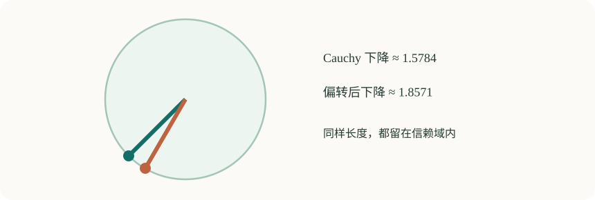

4.1.2 超越 Cauchy 点：曲率使更好的方向出现
Cauchy 点为信赖域算法建立最低下降保障，但它总沿负梯度方向，无法充分利用各个方向不同的曲率。允许搜索另一条球内方向，就可能在相同半径下明显减少更多模型值。
Cauchy 下降是保底，不是最佳解
考虑 m(p)=fₖ+gᵀp+½pᵀBp 和 ‖p‖≤Δ。Cauchy 点在负梯度方向上最优，但未必在球内所有方向上最优。其原因是 B 只用于确定射线上走多远，没有真正改变走的方向。
一个近似子问题求解器常以取得 Cauchy 下降的固定正比例作为质量条件。在正定模型且计算成本允许时，更好的候选点甚至可以超过完整的 Cauchy 下降。
一个单位圆里的具体数值
设 g=(2,2)、B=diag(4,1)，Δ=1。Cauchy 点是 pᶜ=(−1/√2,−1/√2)，模型下降约为 1.578427。
选择 p=(−0.5,−√3/2)，它的范数同样等于 1，却令模型下降约为 1.857051。它没有通过越过信赖域边界来作弊，而是减少了高曲率 x 方向上的移动，相应增加了低曲率 y 方向的移动。

为什么方向改变能帮助
函数的二阶模型对 x 的曲率为 4，对 y 的曲率为 1。在相同长度的步上，把位移从高曲率方向移向低曲率方向，会降低一部分二次惩罚。
但继续朝 y 方向旋转并不一定持续变好，因为线性下降项 gᵀp 也在变化。要同时考虑一阶收益和二阶代价，不能仅选择 Hessian 最小特征值的方向。
方法上的延伸
当 B 正定时，牛顿型方向 pᴮ=−B⁻¹g 为无约束模型的极小方向。如果球内允许它，就可以直接采用；否则 Dogleg 借用最速下降方向与 Newton 方向构造折线。
如果 B 不定，则不能直接把 pᴮ 当作模型的无约束极小点。负曲率方向和信赖域边界的处理需要其他算法。
什么结论还没有得到
本例只比较单步的模型下降，不能由此推断整个优化算法的最终运行时间；而模型下降的优势也不保证实际 f 一定下降得更多。
仍需实际/预测下降比与半径更新规则，并让子问题候选在信赖域内严格可行。
交互：改变参数并观察模型下降
改变候选角度，查看为什么进一步靠近 y 轴并不总是越好。
实时模型计算
Python：模型与断言交叉验证
完整代码仅依赖 Python 标准库；可独立运行，包含数值断言。
"""Compare feasible Cauchy and curvature-aware steps on one sphere."""
from math import sqrt, sin, cos, radians
def reduction(p):
x,y = p
return -(2*x+2*y+0.5*(4*x*x+y*y))
def cauchy():
return (-1/sqrt(2),-1/sqrt(2))
def candidate(degrees):
theta = radians(degrees)
return (-cos(theta),-sin(theta))
if __name__ == "__main__":
c = cauchy()
better = candidate(60)
print("Cauchy drop:", reduction(c))
print("60-degree candidate:", reduction(better))
assert abs(sum(t*t for t in better)-1)<1e-12
assert abs(reduction(c)-1.57842712474619)<1e-10
assert abs(reduction(better)-1.8570508075688772)<1e-10
assert reduction(better)>reduction(c)